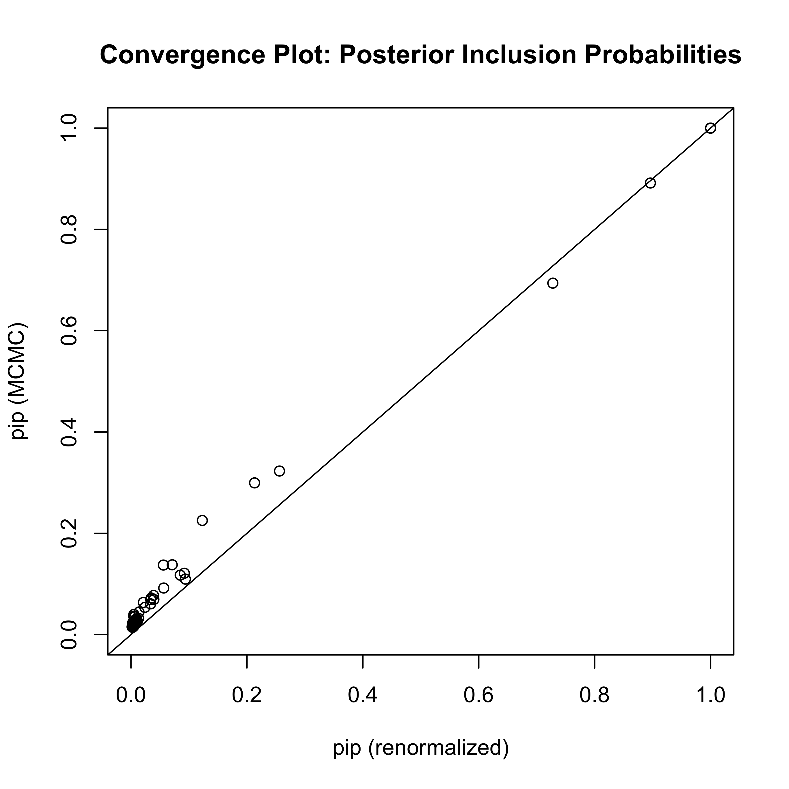
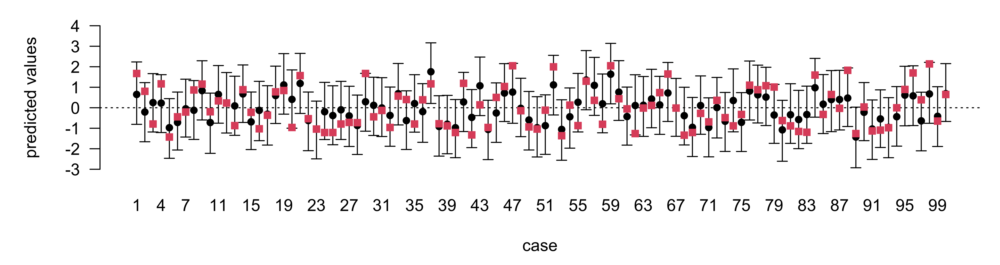

Bayesian Model Averaging and Variable Selection
STA721: Lecture 18
Duke University
US Air Example
Summary
P(B != 0 | Y) model 1 model 2 model 3 model 4
Intercept 1.00000000 1.00000 1.0000000 1.0000000 1.0000000
temp 0.91158530 1.00000 1.0000000 1.0000000 1.0000000
log(mfgfirms) 0.31718916 0.00000 0.0000000 0.0000000 1.0000000
log(popn) 0.09223957 0.00000 0.0000000 0.0000000 0.0000000
wind 0.29394451 0.00000 0.0000000 0.0000000 1.0000000
precip 0.28384942 0.00000 1.0000000 0.0000000 1.0000000
raindays 0.22903262 0.00000 0.0000000 1.0000000 0.0000000
BF NA 1.00000 0.3286643 0.2697945 0.2655873
PostProbs NA 0.29410 0.0967000 0.0794000 0.0781000
R2 NA 0.29860 0.3775000 0.3714000 0.5427000
dim NA 2.00000 3.0000000 3.0000000 5.0000000
logmarg NA 3.14406 2.0313422 1.8339656 1.8182487Plots of Coefficients
Posterior Distribution with Uniform Prior on Model Space
Posterior Distribution with BB(1,1) Prior on Model Space
Posterior Distribution with BB(1,1) Prior on Model Space
Diabetes Example
set.seed(8675309)
source("yX.diabetes.train.txt")
diabetes.train = as.data.frame(diabetes.train)
source("yX.diabetes.test.txt")
diabetes.test = as.data.frame(diabetes.test)
colnames(diabetes.test)[1] = "y"
str(diabetes.train)'data.frame': 342 obs. of 65 variables:
$ y : num -0.0147 -1.0005 -0.1444 0.6987 -0.2222 ...
$ age : num 0.7996 -0.0395 1.7913 -1.8703 0.113 ...
$ sex : num 1.064 -0.937 1.064 -0.937 -0.937 ...
$ bmi : num 1.296 -1.081 0.933 -0.243 -0.764 ...
$ map : num 0.459 -0.553 -0.119 -0.77 0.459 ...
$ tc : num -0.9287 -0.1774 -0.9576 0.256 0.0826 ...
$ ldl : num -0.731 -0.402 -0.718 0.525 0.328 ...
$ hdl : num -0.911 1.563 -0.679 -0.757 0.171 ...
$ tch : num -0.0544 -0.8294 -0.0544 0.7205 -0.0544 ...
$ ltg : num 0.4181 -1.4349 0.0601 0.4765 -0.6718 ...
$ glu : num -0.371 -1.936 -0.545 -0.197 -0.979 ...
$ age^2 : num -0.312 -0.867 1.925 2.176 -0.857 ...
$ bmi^2 : num 0.4726 0.1185 -0.0877 -0.6514 -0.2873 ...
$ map^2 : num -0.652 -0.573 -0.815 -0.336 -0.652 ...
$ tc^2 : num -0.091 -0.6497 -0.0543 -0.6268 -0.6663 ...
$ ldl^2 : num -0.289 -0.521 -0.3 -0.45 -0.555 ...
$ hdl^2 : num -0.0973 0.8408 -0.3121 -0.2474 -0.5639 ...
$ tch^2 : num -0.639 -0.199 -0.639 -0.308 -0.639 ...
$ ltg^2 : num -0.605 0.78 -0.731 -0.567 -0.402 ...
$ glu^2 : num -0.578 1.8485 -0.4711 -0.6443 -0.0258 ...
$ age:sex: num 0.69 -0.139 1.765 1.609 -0.284 ...
$ age:bmi: num 0.852 -0.142 1.489 0.271 -0.271 ...
$ age:map: num 0.0349 -0.3346 -0.5862 1.1821 -0.3025 ...
$ age:tc : num -0.978 -0.246 -1.927 -0.72 -0.244 ...
$ age:ldl: num -0.803 -0.203 -1.504 -1.2 -0.182 ...
$ age:hdl: num -0.7247 0.0147 -1.2661 1.6523 0.1046 ...
$ age:tch: num -0.254 -0.176 -0.31 -1.598 -0.216 ...
$ age:ltg: num 0.0644 -0.2142 -0.163 -1.1657 -0.3474 ...
$ age:glu: num -0.636 -0.239 -1.359 0.071 -0.438 ...
$ sex:bmi: num 1.304 0.935 0.915 0.142 0.635 ...
$ sex:map: num 0.258 0.289 -0.381 0.5 -0.697 ...
$ sex:tc : num -1.02 0.131 -1.051 -0.274 -0.112 ...
$ sex:ldl: num -0.927 0.236 -0.913 -0.638 -0.452 ...
$ sex:hdl: num -0.647 -1.188 -0.377 1.189 0.238 ...
$ sex:tch: num -0.411 0.47 -0.411 -1.062 -0.296 ...
$ sex:ltg: num 0.2988 1.2093 -0.0866 -0.6032 0.4857 ...
$ sex:glu: num -0.6171 1.6477 -0.8069 -0.0239 0.7283 ...
$ bmi:map: num 0.189 0.191 -0.477 -0.195 -0.702 ...
$ bmi:tc : num -1.5061 -0.0595 -1.1853 -0.3231 -0.3239 ...
$ bmi:ldl: num -1.267 0.183 -0.976 -0.407 -0.536 ...
$ bmi:hdl: num -0.869 -1.41 -0.286 0.586 0.251 ...
$ bmi:tch: num -0.505 0.505 -0.484 -0.614 -0.388 ...
$ bmi:ltg: num 0.1014 1.1613 -0.4085 -0.5893 0.0716 ...
$ bmi:glu: num -0.862 1.693 -0.89 -0.337 0.358 ...
$ map:tc : num -0.687 -0.148 -0.131 -0.451 -0.21 ...
$ map:ldl: num -0.5407 0.0388 -0.1034 -0.6114 -0.036 ...
$ map:hdl: num -0.235 -0.672 0.254 0.745 0.252 ...
$ map:tch: num -0.29 0.207 -0.258 -0.835 -0.29 ...
$ map:ltg: num -0.214 0.428 -0.427 -0.811 -0.748 ...
$ map:glu: num -0.541 0.659 -0.314 -0.23 -0.812 ...
$ tc:ldl : num -0.144 -0.551 -0.139 -0.509 -0.581 ...
$ tc:hdl : num 0.8363 -0.3457 0.6304 -0.2579 -0.0392 ...
$ tc:tch : num -0.405 -0.326 -0.404 -0.295 -0.451 ...
$ tc:ltg : num -0.901 -0.259 -0.571 -0.392 -0.569 ...
$ tc:glu : num 0.0202 0.0196 0.2073 -0.396 -0.4283 ...
$ ldl:hdl: num 0.889 -0.446 0.705 -0.207 0.26 ...
$ ldl:tch: num -0.463 -0.243 -0.463 -0.21 -0.506 ...
$ ldl:ltg: num -0.6536 0.2724 -0.3783 -0.0708 -0.5638 ...
$ ldl:glu: num -0.0194 0.4995 0.1032 -0.4013 -0.6234 ...
$ hdl:tch: num 0.703 -0.5 0.692 0.171 0.651 ...
$ hdl:ltg: num 0.0179 -1.9846 0.3839 0.0399 0.3043 ...
$ hdl:glu: num 0.654 -2.948 0.689 0.452 0.113 ...
$ tch:ltg: num -0.592 0.531 -0.574 -0.253 -0.537 ...
$ tch:glu: num -0.371 1.114 -0.362 -0.522 -0.34 ...
$ ltg:glu: num -0.584 2.184 -0.468 -0.526 0.183 ...MCMC with BAS
user system elapsed
10.538 0.574 11.113 [1] "number of unique models 5905"increase
MCMC.iterations?check diagnostics
Estimates of Posterior Probabilities
relative frequencies \(\hat{P}_{RF}(\boldsymbol{\gamma}\mid \mathbf{Y}) = \frac{\text{# times } \boldsymbol{\gamma}\in S }{S}\)
ergodic average converges to \(p(\boldsymbol{\gamma}\mid \mathbf{Y})\) as \(S \to \infty\)
asymptoptically unbaised
renormalized posterior probabilities \(\hat{P}_{RN}(\boldsymbol{\gamma}\mid \mathbf{Y}) = \frac{p(\mathbf{Y}\mid \boldsymbol{\gamma}) p(\boldsymbol{\gamma})} {\sum_{\boldsymbol{\gamma}\in S} p(\mathbf{Y}\mid \boldsymbol{\gamma}) p(\boldsymbol{\gamma})}\)
also asymptoptically unbaised
Fisher consistent (e.g if we happen to enumerate all models in \(S\) iterations we recover the truth)
if we run long enough the two should agree
also look at other summaries i.e posterior inclusion probabilities \[\hat{p}(\gamma_j = 1 \mid \mathbf{Y}) = \sum_S \gamma_j \hat{P}(\boldsymbol{\gamma}\mid \mathbf{Y})\]
Diagnostic Plot
- model probabilities converge much slower!
Out of Sample Prediction
What is the optimal value to predict \(\mathbf{Y}^{\text{test}}\) given \(\mathbf{Y}\) under squared error?
Iterated expectations leads to BMA for \(\textsf{E}[\mathbf{Y}^{\text{test}} \mid \mathbf{Y}]\)
Prediction under model averaging \[\hat{Y} = \sum_S (\hat{\alpha}_\boldsymbol{\gamma}+ \mathbf{X}_{\boldsymbol{\gamma}}^{\text{test}} \hat{\boldsymbol{\beta}}_{\boldsymbol{\gamma}}) \hat{p}(\boldsymbol{\gamma}\mid \mathbf{Y})\]
Credible Intervals & Coverage
posterior predictive distribution \[ p(\mathbf{y}^{\text{test}} \mid \mathbf{y}) = \sum_\boldsymbol{\gamma}p(\mathbf{y}^{\text{test}} \mid \mathbf{y}, \boldsymbol{\gamma})p(\boldsymbol{\gamma}\mid \mathbf{y}) \]
integrate out \(\alpha\) and \(\boldsymbol{\beta_\gamma}\) to get a normal predictive given \(\phi\) and \(\boldsymbol{\gamma}\) (and \(\mathbf{y}\))
integrate out \(\phi\) to get a t distribution given \(\boldsymbol{\gamma}\) and \(\mathbf{y}\)
credible intervals via sampling
- sample a model from \(p(\boldsymbol{\gamma}\mid \mathbf{y})\)
- conditional on a model sample \(y \sim p(\mathbf{y}^{\text{test}} \mid \mathbf{y}, \boldsymbol{\gamma})\)
- compute quantiles from sample \(y\)
95% Prediction intervals
Selection and Prediction
BMA - optimal for squared error loss Bayes \[\textsf{E}[\| \mathbf{Y}^{\text{test}} - a\|^2 \mid \mathbf{y}] = \textsf{E}[\| \mathbf{Y}^{\text{test}} - \textsf{E}[\mathbf{Y}^{\text{test}}\mid \mathbf{y}] \|^2 \mid \mathbf{y}] + \| \textsf{E}[\mathbf{Y}^{\text{test}}\mid \mathbf{y}] - a\|^2 \]
What if we want to use only a single model for prediction under squared error loss?
HPM: Highest Posterior Probability model is optimal for selection, but not prediction
MPM: Median Probability model (select model where PIP > 0.5) (optimal under certain conditions; nested models)
BPM: Best Probability Model - Model closest to BMA under loss (usually includes more predictors than HPM or MPM)
Example
Theory - Consistency of g-priors
desire that posterior probability of model goes to 1 as \(n \to \infty\)
- does not alwyas hold if the null model is true (may be highest posterior probability model)
- need prior on \(g\) to depend on \(n\) (rules out EB and fixed g-priors with \(g \ne n\))
- asymptotically BMA collapses to the true model
other quantities may converge i.e. posterior mean
what if the true model \(\boldsymbol{\gamma}_T\) is not in \(\Gamma\)? What can we say?
- \(\boldsymbol{{\cal M}}\)-complete; BMA converges to the model that is “closest” to the truth in Kullback-Leibler divergence
- \(\boldsymbol{{\cal M}}\)-closed; realize that \((p_\boldsymbol{\gamma}) = 0 \ \forall \boldsymbol{\gamma}\in \mathbf{G}\) and is nonsense but know \(\boldsymbol{\gamma}_T\), however want to use models in \(\mathbf{G}\) only
- \(\boldsymbol{{\cal M}}\)-open; realize that \((p_\boldsymbol{\gamma}) = 0 \ \forall \boldsymbol{\gamma}\in \mathbf{G}\) and is nonsense but know \(\boldsymbol{\gamma}_T\)
- latter is related to “stacking” which is a frequentist method of ensemble learning using cross-validation; see Clyde & Iversen (2013) for the curious to motivate via decision theory
Summary
Choice of prior on \(\boldsymbol{\beta_\gamma}\)
- orthogonally invariant priors - multivariate Spike & Slab
- products of independent Spike & Slab priors
- non-semi-conjugate
priors on the models (sensitivity)
computation (MCMC, “stochastic search”, variational, orthogonal data augmentation, reversible jump-MCMC)
posterior summaries - select a model or “average” over all models
Other aspects of model selection?
- transformations of \(\mathbf{Y}\)
- functions of \(\mathbf{X}\): interactions or nonlinear functions such as splines kernels
- choice of error distribution